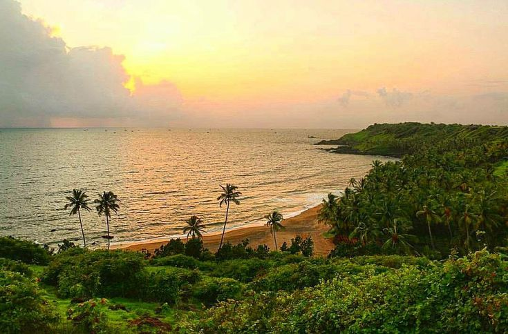
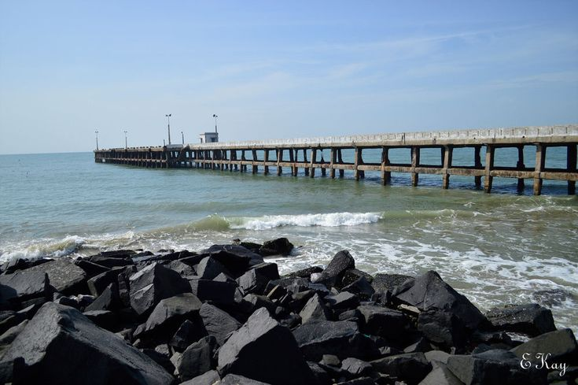

Beaches
Goa Beach
Goa's 125 km coastline, featuring 39 distinct beaches, is divided into lively North Goa and serene South Goa. North Go a is known for vibrant shacks, water sports (parasailing, jet skiing), and nightlife at beaches like Baga and Calangute South Goa offers quiet, scenic, white-sand spots ideal for relaxing, such as Palolem and Agonda.

Vizag Beach
Vizag boasts stunning, diverse beaches along the Bay of Bengal, characterized by golden sands, clear blue waters, and surrounding lush hills. Major highlights include the bustling RK Beach, popular for sunrises, and the adventurous Blue Flag-certified Rushikonda Beach, known for water sports.

Nellore Beach
Nellore beaches offer serene, relatively untouched coastal getaways along the Bay of Bengal in Andhra Pradesh, characterized by sandy shorelines, calm atmospheres, and breathtaking sunrises. Key spots include the popular, picturesque Mypadu Beach and the quiet, scenic Thummalapenta Beach, making the area ideal for weekend relaxation and nature lovers.

Chennai Beach
Chennai boasts a vibrant coastline along the Bay of Bengal, featuring some of India's longest urban shores, most notably the 13 km long Marina Beach and the cleaner, popular Elliot's Beach. These beaches are famous for golden sands, sunrise views, local seafood, and acting as social hubs for walking and culture.

Pondicherry Beach
Pondicherry beaches offer a serene blend of French colonial charm and rocky Bay of Bengal coastlines, perfect for sunrises, strolling, and cafes. Key spots include the bustling Promenade Beach, tranquil Paradise Beach, and surf-friendly Serenity Beach. Most popular beaches are known for cleanliness,, scenic, and, relaxing vibes.
